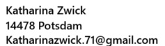

Angaben gemäß § 5 TMG
Hinweis:
Dies ist eine private, nicht-kommerzielle Website. Eine gesetzliche Impressumspflicht besteht nicht.
Als Betreiberin dieser privaten Webseite nehme ich den Schutz deiner persönlichen Daten sehr ernst. Ich behandle deine personenbezogenen Daten vertraulich und entsprechend der gesetzlichen Datenschutzvorschriften sowie dieser Datenschutzerklärung.
Der Provider dieser Seite erhebt und speichert automatisch Informationen in sogenannten Server-Logfiles, die dein Browser automatisch übermittelt. Dies sind:
Diese Daten sind nicht bestimmten Personen zuordenbar. Eine Zusammenführung dieser Daten mit anderen Datenquellen wird nicht vorgenommen.
Diese Website verwendet keine Cookies oder Tracking-Technologien.
Wenn du mir per E-Mail Anfragen zukommen lässt, werden deine Angaben aus der E-Mail inklusive der von dir dort angegebenen Kontaktdaten gespeichert, um deine Anfrage zu bearbeiten. Diese Daten gebe ich nicht ohne deine Einwilligung weiter.
Du hast jederzeit das Recht auf Auskunft über die bei mir gespeicherten personenbezogenen Daten, deren Herkunft und Empfänger sowie den Zweck der Datenverarbeitung. Außerdem hast du ein Recht auf Berichtigung, Sperrung oder Löschung dieser Daten.
Katharina Zwick
14478 Potsdam
E-Mail: katharinazwick.71@gmail.com